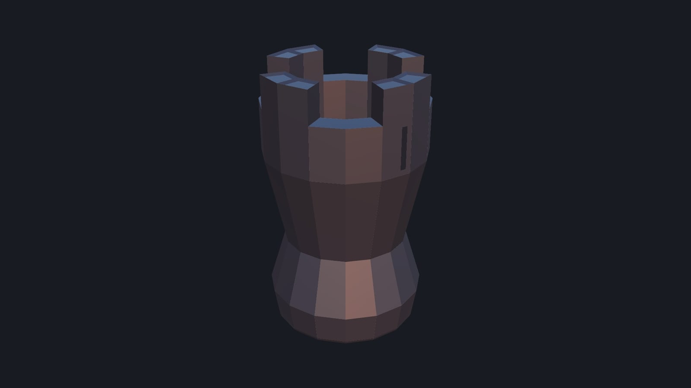
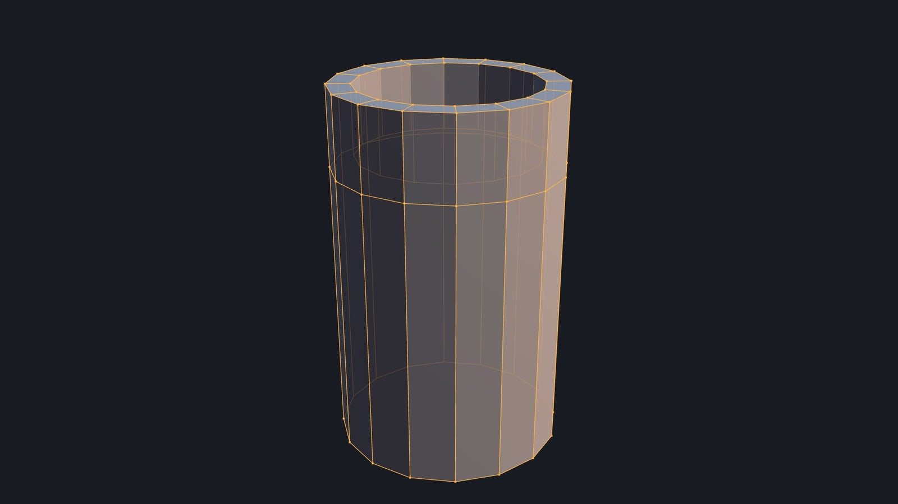
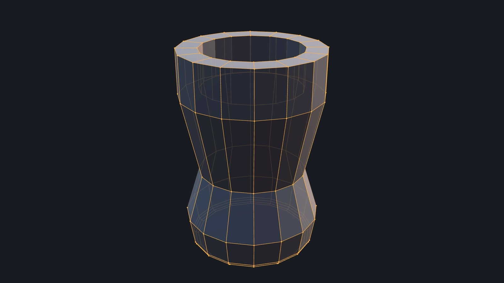
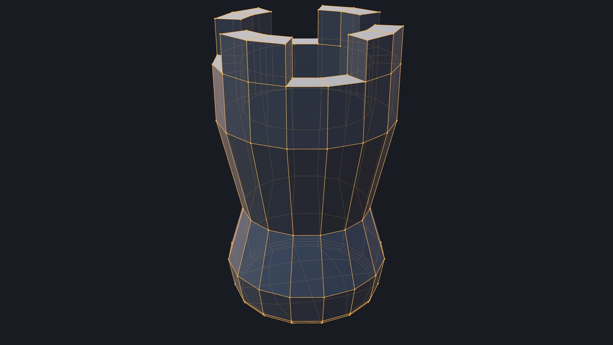
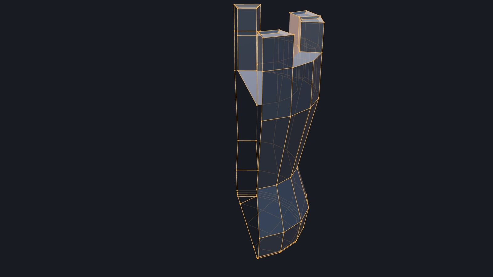
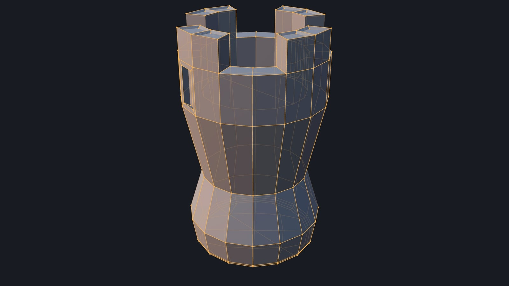

30 edits, one mesh
An EditHero-style chain for the modelling command API: a 16-sided cylinder becomes a chess rook in 30 edit-mode steps - inset, extrude, subdivide, bevel, bisect, connect, dissolve, grid fill, mirror, limited dissolve, make face - and every step is scored on five checks: did it do what it claims, locality (everything it did not claim is bit-identical), manifold, exact undo/redo, and determinism across two fresh pages. Side chains cover the rest of the command set, hazards (bad input) and controls (steps built to fail, which the harness must catch).

The film
node demos/edit-chain/record.mjs (see direction.md).1:15 · 1920×1080 · 30 fps · H.264, faststart · rendered frame by frame on ANGLE (Apple, ANGLE Metal Renderer: Apple Paravirtual device, Unspecified Version)
Metrics
Key steps










Checks
| step | did | locality | manifold | undo | determinism |
|---|---|---|---|---|---|
| 1. primitive: 16-sided cylinder | PASS | PASS | PASS | PASS | PASS |
| 2. rename body -> rook | PASS | PASS | PASS | PASS | PASS |
| 3. inset the top cap by 0.1 | PASS | PASS | PASS | PASS | PASS |
| 4. extrude the inner cap down 0.3: the cup | PASS | PASS | PASS | PASS | PASS |
| 5. subdivide the 16 side edges | PASS | PASS | PASS | PASS | PASS |
| 6. move the new ring up to y = 0.45 | PASS | PASS | PASS | PASS | PASS |
| 7. flare the crown band x1.12 | PASS | PASS | PASS | PASS | PASS |
| 8. subdivide the lower side edges | PASS | PASS | PASS | PASS | PASS |
| 9. pinch the waist x0.8 | PASS | PASS | PASS | PASS | PASS |
| 10. bisect at y = -0.55 (no fill, nothing cleared) | PASS | PASS | PASS | PASS | PASS |
| 11. swell the foot ring x1.15 | PASS | PASS | PASS | PASS | PASS |
| 12. bevel the bottom rim: 3 segments, 0.04 | PASS | PASS | PASS | PASS | PASS |
| 13. connectVertices across the bottom 16-gon | PASS | PASS | PASS | PASS | PASS |
| 14. dissolveElements that edge again | PASS | PASS | PASS | PASS | PASS |
| 15. deleteElements ONLY_FACE: open the bottom | PASS | PASS | PASS | PASS | PASS |
| 16. gridFill the bottom hole | PASS | PASS | PASS | PASS | PASS |
| 17. extrude 4 merlons up 0.22 | PASS | PASS | PASS | PASS | PASS |
| 18. inset each merlon top, recessed 0.015 | PASS | PASS | PASS | PASS | PASS |
| 19. bisect at x = 0, clear the +x half | PASS | PASS | PASS | PASS | PASS |
| 20. inset a slit panel on the crown | PASS | PASS | PASS | PASS | PASS |
| 21. extrude the slit panel 0.05 inward | PASS | PASS | PASS | PASS | PASS |
| 22. vertices: drop the slit floor's lower edge 0.03 | PASS | PASS | PASS | PASS | PASS |
| 23. modifier: live mirror on x | PASS | PASS | PASS | PASS | PASS |
| 24. modifier: apply the mirror | PASS | PASS | PASS | PASS | PASS |
| 25. material: dark stone | PASS | PASS | PASS | PASS | PASS |
| 26. transform the object: stand it on the ground | PASS | PASS | PASS | PASS | PASS |
| 27. applyTransform | PASS | PASS | PASS | PASS | PASS |
| 28. dissolveLimited the bottom grid | PASS | PASS | PASS | PASS | PASS |
| 29. deleteElements ONLY_FACE: one merlon recess | PASS | PASS | PASS | PASS | PASS |
| 30. makeEdgeFace: fill it again (F) | PASS | PASS | PASS | PASS | PASS |
How it was made
chain.mjs is the chain as data: each step a command (selections written as geometry queries, resolved per run), a claim of what it may touch, and expectations, with the Blender behaviour cited where it is not obvious. run.mjs runs every chain through a modelling session and scores it (topology.mjs diffs meshes bit for bit); results.json is its output, re-run on the current editor on 2026-10-18. record.mjs films the main chain from the resolved commands in results.json on the GPU VM: a clay surface with the master mesh's edges drawn over it (hidden ones faint, as Blender's edit-mode overlay), each step's scores beside it.
Re-run: npm run modelling:session -- demos/edit-chain/run.mjs --port 9479 --out tmp/edit-chain-session, node demos/edit-chain/record.mjs, node demos/edit-chain/make-report.mjs.
Not PASS outside the main chain (7): bevel-03 bevel an interior edge, 3 segments; export-02 export glb {objects: [gem]}, re-import, compare; scene-06 display material: the red stays; hazard-06 transform verts {from, to}; control-02 CONTROL: move two vertices, claim one; control-04 CONTROL: flat shading, claimed as nothing; control-08 CONTROL: weld the touching faces together. The controls fail on purpose; the others are open issues: chain-display-material-overwrites-colour.md (scene-06), chain-export-not-deterministic.md and command-export-objects-ignored.md (export-02), chain-transform-range-schema.md (hazard-06); bevel-03 has no Blender fixture for its case.
The film ran 30 commands (0 failed), 118.9 ms of command time in the page on the GPU. By operation:
The first commands of the transcript (transcript.json has all of them, with results):
{"op":"primitive","type":"cylinder","name":"body","segments":16,"radius":0.5,"height":1.6,"color":"#d8cfbd","uvs":true}
{"op":"rename","object":"body","name":"rook"}
{"op":"inset","object":"rook","faces":[17],"thickness":0.1}
{"op":"extrude","object":"rook","faces":[17],"distance":-0.3}
{"op":"subdivide","object":"rook","edges":[2,3,6,9,12,15,18,21,24,27,30,33,36,39,42,45],"cuts":1}
{"op":"transform","object":"rook","verts":[64,65,66,67,68,69,70,71,72,73,74,75,76,77,78,79],"move":[0,0.45,0]}
{"op":"transform","object":"rook","faces":[0,1,2,3,4,5,6,7,8,9,10,11,12,13,14,15],"scale":[1.12,1,1.12],"pivot":[0,0.625,0]}
{"op":"subdivide","object":"rook","edges":[3,6,9,12,15,18,21,24,27,30,33,36,39,42,45,112]}
{"op":"transform","object":"rook","verts":[80,81,82,83,84,85,86,87,88,89,90,91,92,93,94,95],"scale":[0.8,1,0.8],"pivot":[0,-0.175,0]}
{"op":"bisect","object":"rook","planeCo":[0,-0.55,0],"planeNo":[0,1,0]}
{"op":"transform","object":"rook","verts":[96,97,98,99,100,101,102,103,104,105,106,107,108,109,110,111],"scale":[1.15,1,1.15],"pivot":[0,-0.55,0]}
{"op":"bevel","object":"rook","offset":0.04,"segments":3,"markSeam":true,"edges":[0,4,7,10,13,16,19,22,25,28,31,34,37,40,43,46]}
{"op":"connectVertices","object":"rook","verts":[96,128]}
{"op":"dissolveElements","object":"rook","edges":[304]}
{"op":"deleteElements","object":"rook","faces":[145],"type":"ONLY_FACE"}
{"op":"gridFill","object":"rook","edges":[185,192,199,206,213,220,227,234,241,248,255,262,269,276,283,287]}
{"op":"extrude","object":"rook","faces":[16,19,20,23,24,27,28,31],"distance":0.22}
{"op":"inset","object":"rook","faces":[153,154,155,156,157,158,159,160],"thickness":0.02,"depth":-0.015,"individual":true}
{"op":"bisect","object":"rook","planeCo":[0,0,0],"planeNo":[1,0,0],"clearOuter":true}
{"op":"inset","object":"rook","faces":[3],"thickness":0.035}
{"op":"extrude","object":"rook","faces":[3],"distance":-0.05}
{"op":"vertices","object":"rook","relative":true,"verts":[[133,0,-0.03,0],[136,0,-0.03,0]]}
{"op":"modifier","object":"rook","add":{"type":"mirror","axis":"x"}}
{"op":"modifier","object":"rook","apply":true}
…
What still looks weak
- The rook is a test object, not a showpiece: low-poly, flat-shaded, one material.
- The film shows each step's result; the harness's own undo/redo and determinism passes are scored, not shown.